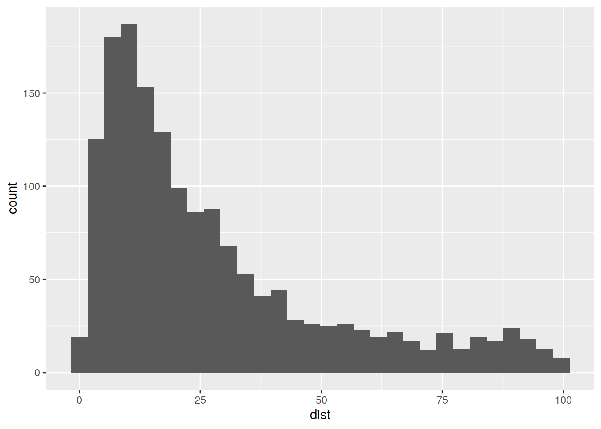
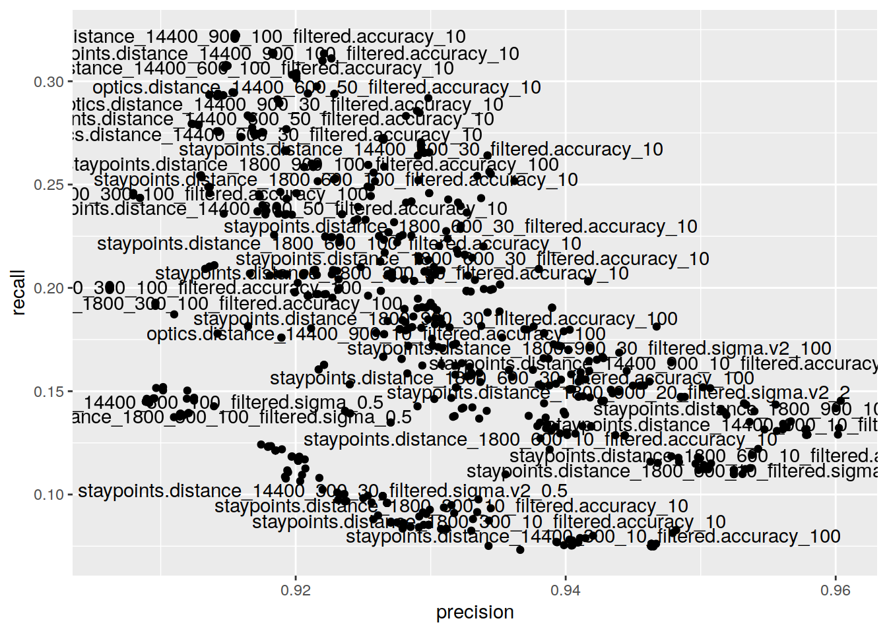
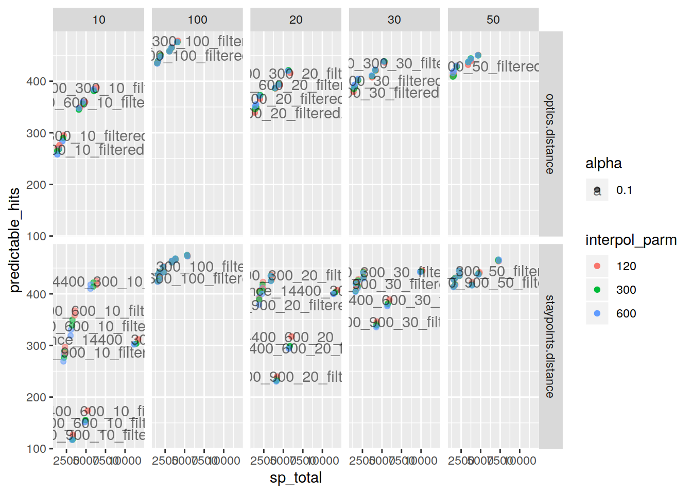

Last updated: 2020-01-30
Checks: 7 0
Knit directory: initialAnalysis/
This reproducible R Markdown analysis was created with workflowr (version 1.4.0.9001). The Checks tab describes the reproducibility checks that were applied when the results were created. The Past versions tab lists the development history.
Great! Since the R Markdown file has been committed to the Git repository, you know the exact version of the code that produced these results.
Great job! The global environment was empty. Objects defined in the global environment can affect the analysis in your R Markdown file in unknown ways. For reproduciblity it’s best to always run the code in an empty environment.
The command set.seed(20180727) was run prior to running the code in the R Markdown file. Setting a seed ensures that any results that rely on randomness, e.g. subsampling or permutations, are reproducible.
Great job! Recording the operating system, R version, and package versions is critical for reproducibility.
Nice! There were no cached chunks for this analysis, so you can be confident that you successfully produced the results during this run.
Great job! Using relative paths to the files within your workflowr project makes it easier to run your code on other machines.
Great! You are using Git for version control. Tracking code development and connecting the code version to the results is critical for reproducibility. The version displayed above was the version of the Git repository at the time these results were generated.
Note that you need to be careful to ensure that all relevant files for the analysis have been committed to Git prior to generating the results (you can use wflow_publish or wflow_git_commit). workflowr only checks the R Markdown file, but you know if there are other scripts or data files that it depends on. Below is the status of the Git repository when the results were generated:
Ignored files:
Ignored: .Rhistory
Ignored: .drake/
Ignored: .slurm_batchtools.tmpl.swp
Ignored: analysis/analyse_staypoint_estimates_cache/
Ignored: analysis/evaluate_staypoint_estimates_cache/
Ignored: analysis/mark_staypoint_cache/
Ignored: analysis/mark_staypoint_systematic_cache/
Ignored: cluster.json
Ignored: credentials.json
Ignored: data/
Ignored: data_fast
Ignored: explore/.make.R.swp
Ignored: lib/keys.R
Unstaged changes:
Modified: analysis/evaluate_staypoint_estimates_single_best_algorithm.Rmd
Modified: explore/geography_explore.R
Modified: explore/make.R
Modified: lib/evaluate_staypoint_estimates_helper.R
Modified: lib/kernel_density_functions.R
Modified: lib/load_results.R
Modified: lib/survey_functions.R
Note that any generated files, e.g. HTML, png, CSS, etc., are not included in this status report because it is ok for generated content to have uncommitted changes.
These are the previous versions of the R Markdown and HTML files. If you’ve configured a remote Git repository (see ?wflow_git_remote), click on the hyperlinks in the table below to view them.
| File | Version | Author | Date | Message |
|---|---|---|---|---|
| Rmd | d90873e | Dennis Wollersheim | 2020-01-29 | wflow_publish(“analysis/evaluate_florian_best_dataset.Rmd”) |
source('lib/base_initialise.R')Loading required package: spLoading required package: DBI── Attaching packages ─────────────────────────────────────── tidyverse 1.3.0 ──✔ ggplot2 3.2.1 ✔ purrr 0.3.3
✔ tibble 2.1.3 ✔ dplyr 0.8.3
✔ tidyr 1.0.0 ✔ stringr 1.4.0
✔ readr 1.3.1 ✔ forcats 0.4.0── Conflicts ────────────────────────────────────────── tidyverse_conflicts() ──
✖ tidyr::extract() masks raster::extract()
✖ dplyr::filter() masks stats::filter()
✖ dplyr::lag() masks stats::lag()
✖ dplyr::select() masks raster::select()
Attaching package: 'lubridate'The following object is masked from 'package:base':
date
Attaching package: 'drake'The following objects are masked from 'package:tidyr':
expand, gatherData (c) OpenStreetMap contributors, ODbL 1.0. http://www.openstreetmap.org/copyright
Attaching package: 'tsibble'The following objects are masked from 'package:lubridate':
interval, new_intervalThe following object is masked from 'package:dplyr':
idThe following object is masked from 'package:raster':
stretch
Attaching package: 'magrittr'The following object is masked from 'package:purrr':
set_namesThe following object is masked from 'package:tidyr':
extractThe following object is masked from 'package:raster':
extract
Attaching package: 'wrapr'The following object is masked from 'package:dplyr':
coalesceThe following object is masked from 'package:tibble':
viewLoading required package: BiocGenericsLoading required package: parallel
Attaching package: 'BiocGenerics'The following objects are masked from 'package:parallel':
clusterApply, clusterApplyLB, clusterCall, clusterEvalQ,
clusterExport, clusterMap, parApply, parCapply, parLapply,
parLapplyLB, parRapply, parSapply, parSapplyLBThe following objects are masked from 'package:lubridate':
intersect, setdiff, unionThe following objects are masked from 'package:dplyr':
combine, intersect, setdiff, unionThe following objects are masked from 'package:raster':
as.data.frame, intersect, match, union, unique, which.max,
which.minThe following objects are masked from 'package:stats':
IQR, mad, sd, var, xtabsThe following objects are masked from 'package:base':
anyDuplicated, append, as.data.frame, basename, cbind, colnames,
dirname, do.call, duplicated, eval, evalq, Filter, Find, get, grep,
grepl, intersect, is.unsorted, lapply, Map, mapply, match, mget,
order, paste, pmax, pmax.int, pmin, pmin.int, Position, rank,
rbind, Reduce, rownames, sapply, setdiff, sort, table, tapply,
union, unique, unsplit, which, which.max, which.minLoading required package: S4VectorsLoading required package: stats4
Attaching package: 'S4Vectors'The following object is masked from 'package:drake':
expandThe following objects are masked from 'package:lubridate':
second, second<-The following objects are masked from 'package:dplyr':
first, renameThe following object is masked from 'package:tidyr':
expandThe following objects are masked from 'package:raster':
metadata, metadata<-, values, values<-The following object is masked from 'package:base':
expand.grid
Attaching package: 'IRanges'The following object is masked from 'package:tsibble':
tileThe following object is masked from 'package:lubridate':
%within%The following objects are masked from 'package:dplyr':
collapse, desc, sliceThe following object is masked from 'package:purrr':
reduceThe following objects are masked from 'package:raster':
distance, shift, trimThe following object is masked from 'package:sp':
%over%Warning: package 'zoo' was built under R version 3.6.2
Attaching package: 'zoo'The following object is masked from 'package:tsibble':
indexThe following objects are masked from 'package:base':
as.Date, as.Date.numeric
Attaching package: 'glue'The following objects are masked from 'package:IRanges':
collapse, trimThe following object is masked from 'package:dplyr':
collapseThe following object is masked from 'package:raster':
trim
Attaching package: 'tibbletime'The following object is masked from 'package:stats':
filter
Attaching package: 'janitor'The following object is masked from 'package:raster':
crosstabThe following objects are masked from 'package:stats':
chisq.test, fisher.testsource('lib/functions.R')
source('lib/gps_functions.R')
source('lib/location_prep.R')
source('lib/load_results.R')Warning: Expected 8 pieces. Missing pieces filled with `NA` in 720 rows [1, 2,
3, 4, 5, 6, 7, 8, 9, 10, 11, 12, 13, 14, 15, 16, 17, 18, 19, 20, ...].source('lib/evaluate_staypoint_estimates_helper.R')
source('lib/survey_functions.R')
source("explore/failure_analysis_florian_surveys.R")
min_accuracy = 10it so happens that the largest duration staypoints in total gives the very high accuracy on predictable staypoints (99%)
so we use that algorithm.
optics_distance_14400_300_100_interpolated_locations_300_filtered_accuracy_100
readd(df_matching_geography_df_summarise_staypoints_df_merged_staypoints_optics_distance_14400_300_100_interpolated_locations_300_filtered_accuracy_100) %>%
{ . } -> df
df %>%
filter( dist<100 ) %>%
ggplot( aes( dist)) + geom_histogram()`stat_bin()` using `bins = 30`. Pick better value with `binwidth`.
df_results %>%
# filter( algorithm == 'optics.distance') %>%
# filter( filter_type == 'filtered.accuracy') %>%
# filter( recall > .18 ) %>%
#filter( max_sp_radius == '10' ) %>%
arrange( desc( recall )) %>%
ggplot( aes( precision, recall) ) +
geom_jitter(position = position_jitter(seed = 1)) +
geom_text(aes( label=source ), position = position_jitter(seed = 1), check_overlap=TRUE)
df_results %>%
arrange(desc(total_sp_duration)) %>%
dplyr::select( source, predictable_hits, predictable_misses, sp_total, total_sp_duration)# A tibble: 720 x 5
source predictable_hits predictable_mis… sp_total total_sp_durati…
<chr> <int> <int> <dbl> <dbl>
1 optics.distance_… 476 5 4079 25602198
2 optics.distance_… 476 5 4079 25602198
3 optics.distance_… 478 3 4131 25601875
4 optics.distance_… 478 3 4131 25601875
5 optics.distance_… 476 5 4055 25571923
6 optics.distance_… 476 5 4055 25571923
7 optics.distance_… 465 16 3331 25286071
8 optics.distance_… 465 16 3331 25286071
9 optics.distance_… 466 15 3358 25274077
10 optics.distance_… 466 15 3358 25274077
# … with 710 more rowsdf_results %>%
filter(interpol_parm > 0 ) %>%
ggplot( aes(sp_total, predictable_hits, color=interpol_parm, alpha=.1) ) +
geom_jitter(position = position_jitter(seed = 1)) +
geom_text(aes( label=source), color='black' , position = position_jitter(seed = 1), check_overlap=TRUE) +
facet_grid( algorithm ~ max_sp_radius )
sessionInfo()R version 3.6.1 (2019-07-05)
Platform: x86_64-pc-linux-gnu (64-bit)
Running under: Ubuntu 18.04.3 LTS
Matrix products: default
BLAS: /usr/lib/x86_64-linux-gnu/openblas/libblas.so.3
LAPACK: /usr/lib/x86_64-linux-gnu/libopenblasp-r0.2.20.so
locale:
[1] LC_CTYPE=en_US.UTF-8 LC_NUMERIC=C
[3] LC_TIME=en_US.UTF-8 LC_COLLATE=en_US.UTF-8
[5] LC_MONETARY=en_US.UTF-8 LC_MESSAGES=en_US.UTF-8
[7] LC_PAPER=en_US.UTF-8 LC_NAME=C
[9] LC_ADDRESS=C LC_TELEPHONE=C
[11] LC_MEASUREMENT=en_US.UTF-8 LC_IDENTIFICATION=C
attached base packages:
[1] stats4 parallel stats graphics grDevices utils datasets
[8] methods base
other attached packages:
[1] janitor_1.2.0 dbscan_1.1-5 futile.logger_1.4.3
[4] tibbletime_0.1.3 glue_1.3.1 zoo_1.8-7
[7] geosphere_1.5-7 geohash_0.4.0 multidplyr_0.0.0.9000
[10] IRanges_2.19.10 S4Vectors_0.23.18 BiocGenerics_0.31.5
[13] fuzzyjoin_0.1.5 wrapr_1.8.9 knitr_1.27
[16] magrittr_1.5 tsibble_0.8.5 revgeo_0.15
[19] osmdata_0.1.1 drake_7.9.0.9000 lubridate_1.7.4
[22] forcats_0.4.0 stringr_1.4.0 dplyr_0.8.3
[25] purrr_0.3.3 readr_1.3.1 tidyr_1.0.0
[28] tibble_2.1.3 ggplot2_3.2.1 tidyverse_1.3.0
[31] RPostgreSQL_0.6-2 DBI_1.1.0 raster_3.0-1
[34] sp_1.3-2 nvimcom_0.9-82
loaded via a namespace (and not attached):
[1] nlme_3.1-142 bitops_1.0-6 fs_1.3.1
[4] filelock_1.0.2 httr_1.4.1 rprojroot_1.3-2
[7] tools_3.6.1 backports_1.1.5 utf8_1.1.4
[10] R6_2.4.1 lazyeval_0.2.2 colorspace_1.4-1
[13] withr_2.1.2 tidyselect_0.2.5 curl_4.3
[16] compiler_3.6.1 git2r_0.26.1 cli_2.0.1
[19] rvest_0.3.5 formatR_1.7 xml2_1.2.2
[22] labeling_0.3 scales_1.1.0 digest_0.6.23
[25] txtq_0.2.0 rmarkdown_2.0 pkgconfig_2.0.3
[28] htmltools_0.4.0 dbplyr_1.4.2 rlang_0.4.2
[31] readxl_1.3.1 rstudioapi_0.10 farver_2.0.1
[34] generics_0.0.2 jsonlite_1.6 RCurl_1.95-4.13
[37] Rcpp_1.0.3 munsell_0.5.0 fansi_0.4.1
[40] lifecycle_0.1.0 stringi_1.4.5 whisker_0.4
[43] yaml_2.2.0 snakecase_0.11.0 storr_1.2.1
[46] RJSONIO_1.3-1.4 plyr_1.8.5 grid_3.6.1
[49] crayon_1.3.4 lattice_0.20-38 haven_2.2.0
[52] hms_0.5.3 zeallot_0.1.0 anytime_0.3.6
[55] pillar_1.4.3 igraph_1.2.4.2 base64url_1.4
[58] reshape2_1.4.3 codetools_0.2-16 futile.options_1.0.1
[61] reprex_0.3.0 evaluate_0.14 lambda.r_1.2.4
[64] modelr_0.1.5 vctrs_0.2.1 cellranger_1.1.0
[67] gtable_0.3.0 assertthat_0.2.1 xfun_0.11
[70] broom_0.5.3 workflowr_1.4.0.9001 ellipsis_0.3.0